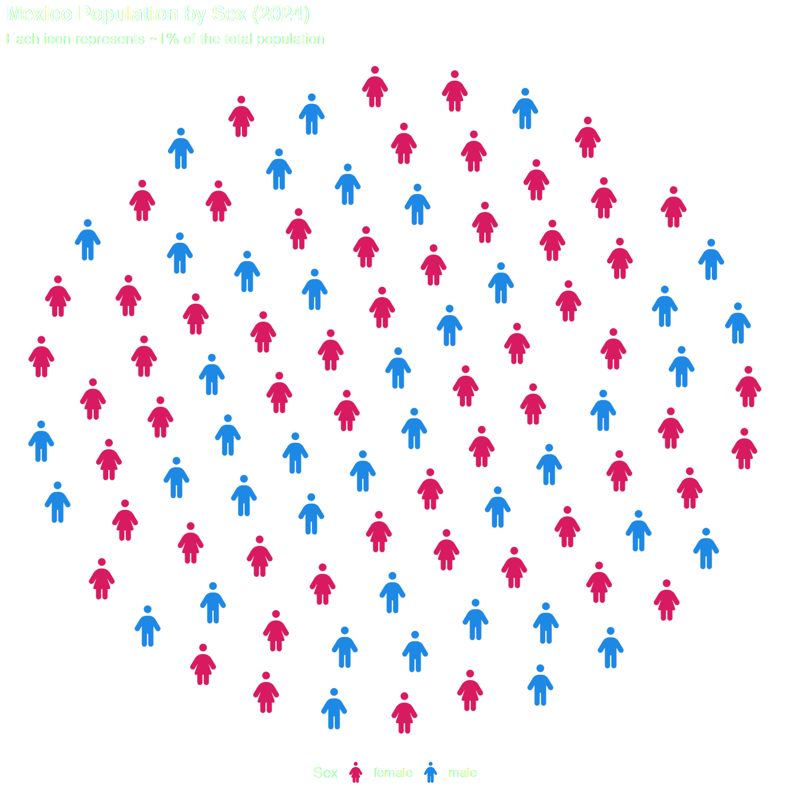
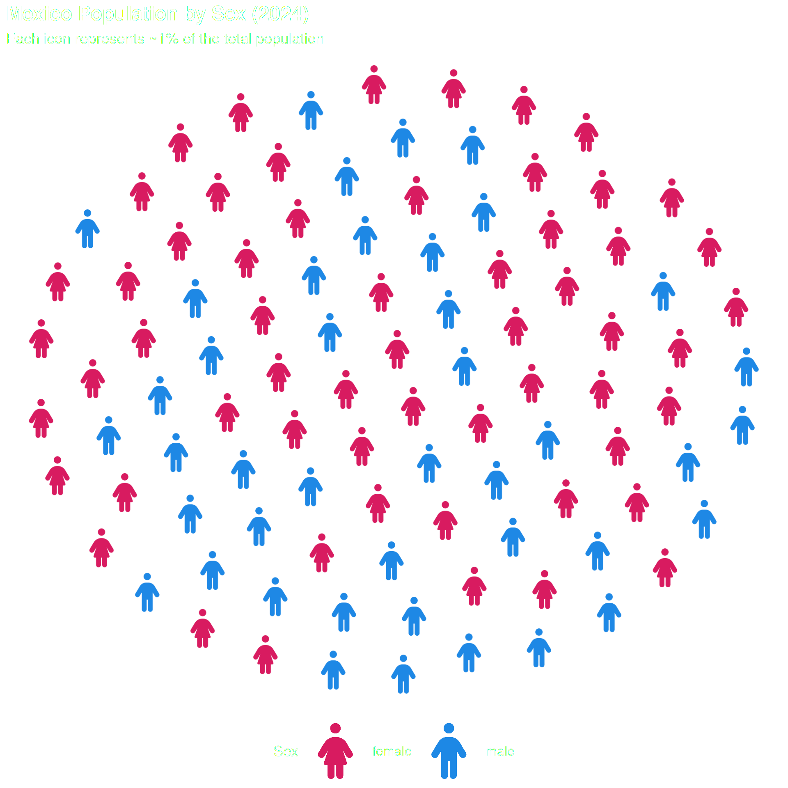
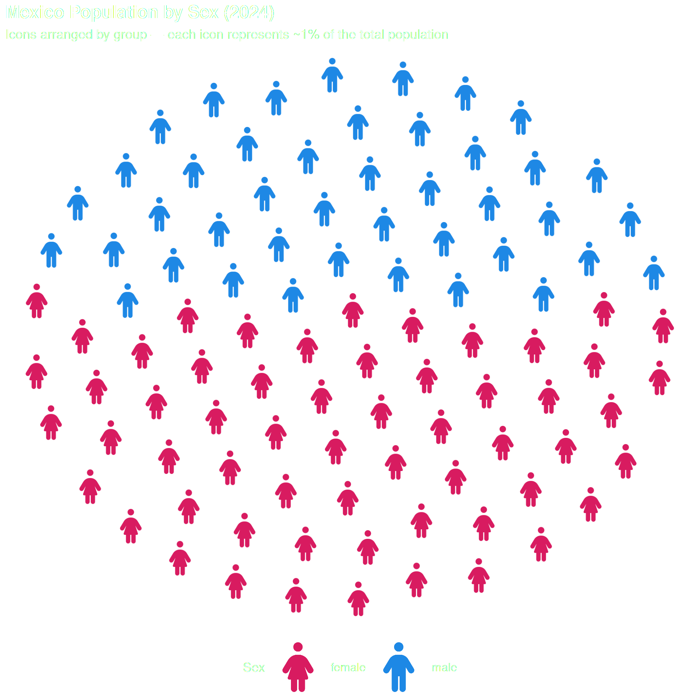
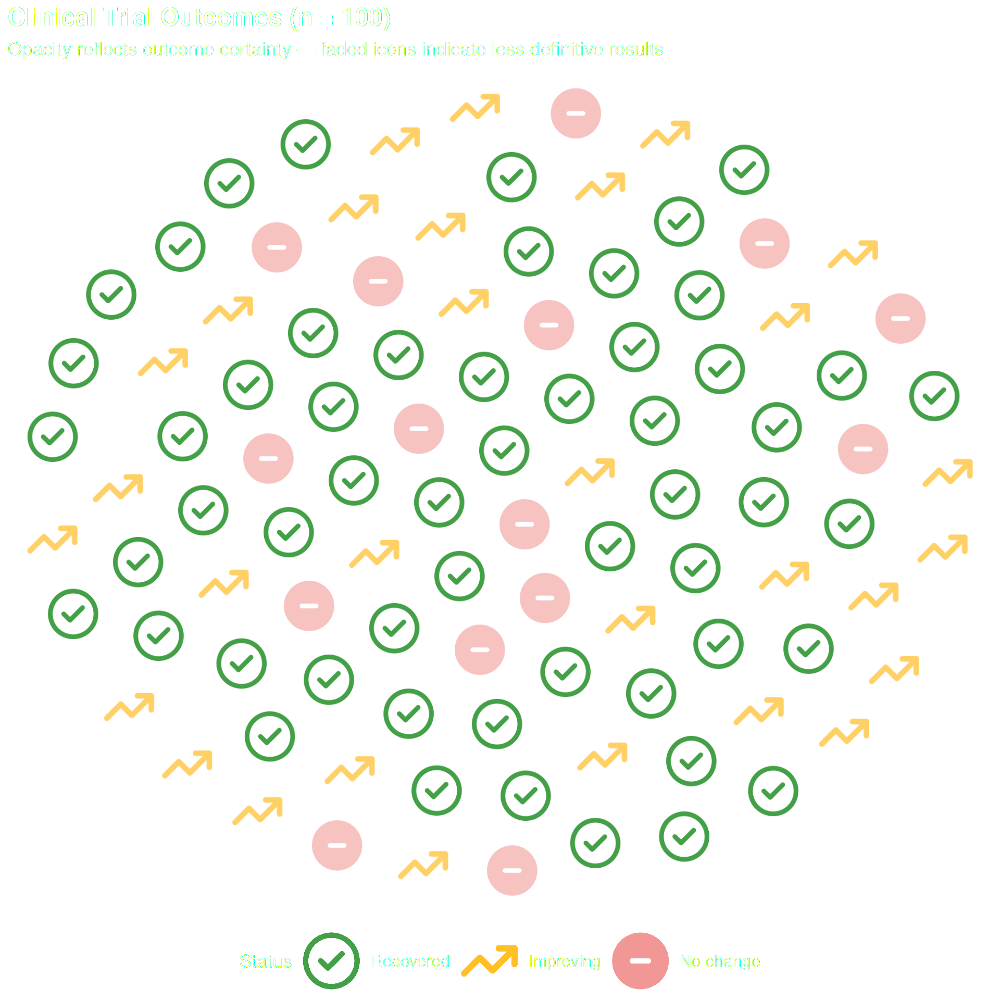
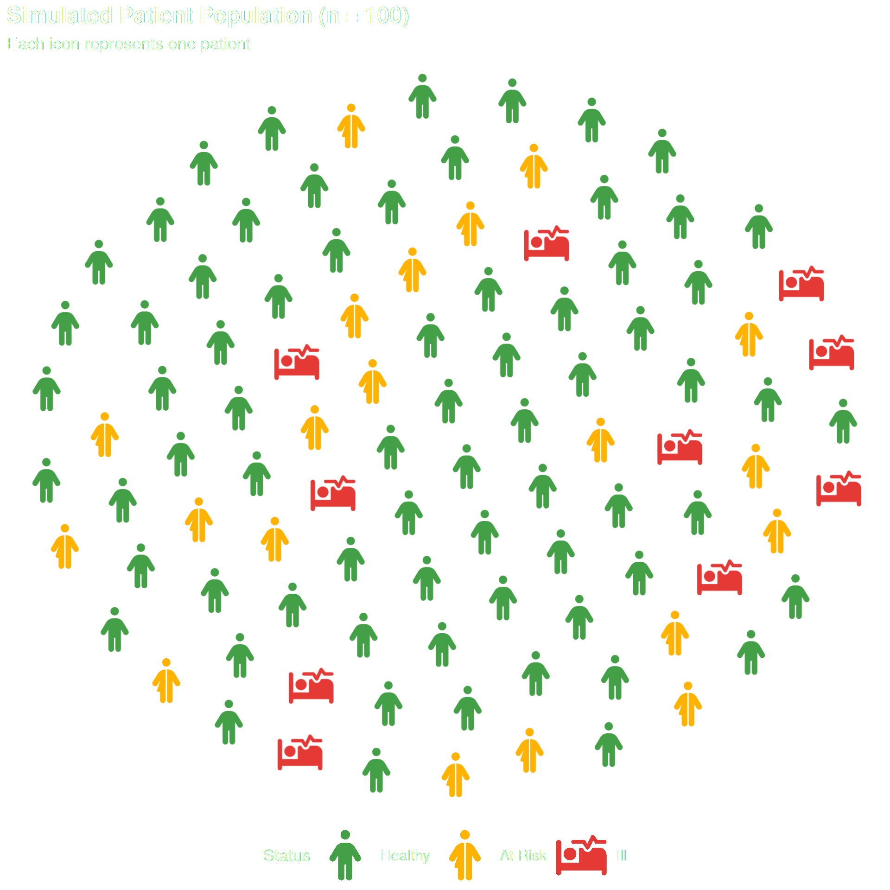
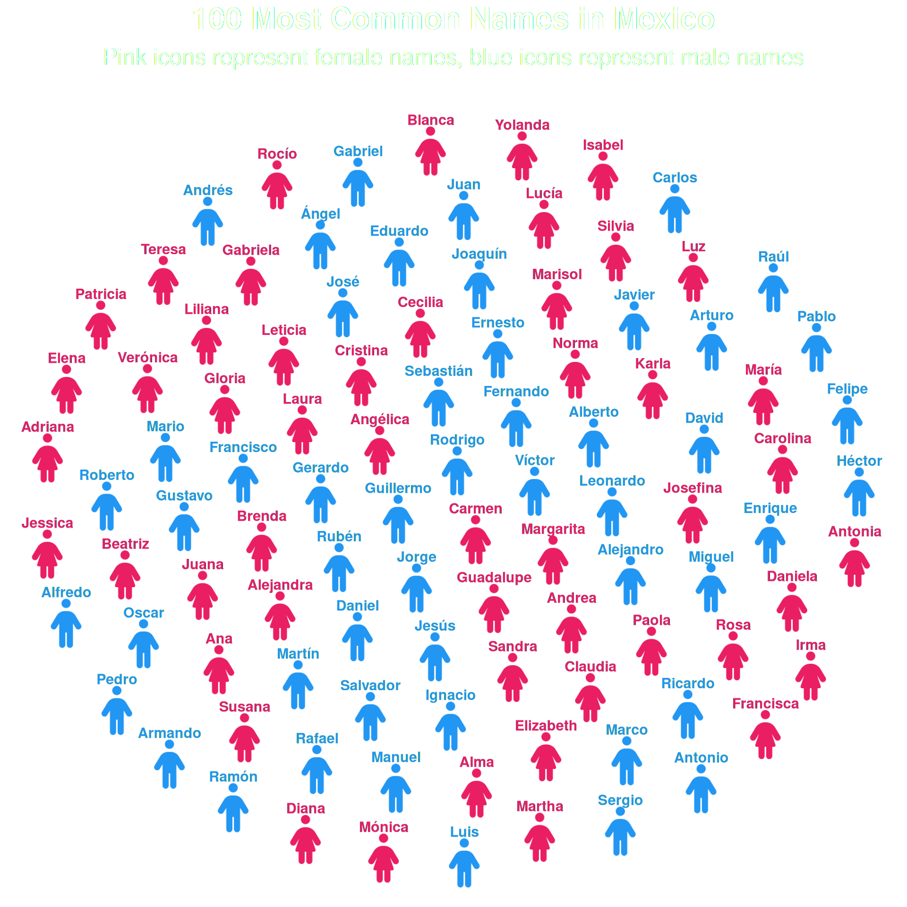

# From CRAN
install.packages("ggpop")
# Development version from GitHub
remotes::install_github("jurjoroa/ggpop")What is ggpop?
ggpop is a ggplot2 extension for creating icon-based population charts, replacing bars or dots with Font Awesome icons.
This vignette walks you through the core workflow using geom_pop(), the main function for building proportional population grids.
Installation
The geom_pop() Workflow
geom_pop() follows a simple three-step workflow:
-
Prepare your data — either use
process_data()or bring your own data frame (one row per icon, max 1,000) - Assign icons — map a Font Awesome icon name to each group
-
Plot — pass the data to
ggplot()and addgeom_pop()
Step 1: Your Data
A data frame with population counts by sex:
library(ggpop)
library(ggplot2)
library(dplyr)
df_pop_mx <- data.frame(
sex = c("male", "female"),
n = c(63459580, 67401427),
country = "Mexico"
)
df_pop_mx sex n country
1 male 63459580 Mexico
2 female 67401427 MexicoStep 2: Process the Data
process_data() converts raw population counts into a sampled data frame where each row represents one icon. It calculates group proportions and allocates icons accordingly.
df_processed <- process_data(
data = df_pop_mx,
group_var = sex,
sum_var = n,
sample_size = 100
)
head(df_processed) type n prop
1 female 67401427 0.5150612
2 male 63459580 0.4849388
3 female 67401427 0.5150612
4 female 67401427 0.5150612
5 female 67401427 0.5150612
6 female 67401427 0.5150612Note:
process_data()is optional. If your data already has one row per icon (up to 1,000 rows), you can pass it directly togeom_pop().
Step 3: Assign Icons
Add an icon column to your processed data. Icon names come from Font Awesome — use any of the 2,000+ free icons.
fa_icons(query = "person")Assign an icon to each group:
Step 4: Plot
Pass the data to ggplot() and add geom_pop(). Map icon and color to your grouping variable.
ggplot() +
geom_pop(
data = df_processed,
aes(icon = icon, color = type),
size = 2,
dpi = 100
) +
scale_color_manual(values = c("male" = "#1E88E5", "female" = "#D81B60")) +
theme_pop(base_size=15) +
theme(plot.title = element_text(color = "white"),
plot.subtitle = element_text(color = "white"),
legend.text = element_text(color = "white"),
legend.title = element_text(color = "white"),
legend.position = "bottom") +
labs(
title = "Mexico Population by Sex (2024)",
subtitle = "Each icon represents ~1% of the total population",
color = "Sex"
)
Scaling legend icons
Use scale_legend_icon() to control the legend icon size. You can also turn off legend icons with legend_icons = FALSE in geom_pop() if you prefer a text-only legend with dots
ggplot(data = df_processed, aes(icon = icon, color = type)) +
geom_pop(size = 2, dpi = 100, legend_icons = TRUE) +
scale_color_manual(values = c("male" = "#1E88E5", "female" = "#D81B60")) +
theme_pop(base_size=15) +
theme(plot.title = element_text(color = "white"),
plot.subtitle = element_text(color = "white"),
legend.text = element_text(color = "white"),
legend.title = element_text(color = "white"),
legend.position = "bottom") +
scale_legend_icon(size = 10) +
labs(title = "Mexico Population by Sex (2024)",
subtitle = "Each icon represents ~1% of the total population",
color = "Sex")
Arranging icons by group
By default, icons are scattered randomly. Set arrange = TRUE to cluster icons by group.
ggplot(data = df_processed, aes(icon = icon, color = type)) +
geom_pop(size = 2, dpi = 100, legend_icons = TRUE, arrange = TRUE) +
scale_color_manual(values = c("male" = "#1E88E5", "female" = "#D81B60")) +
theme_pop(base_size = 15) +
theme(plot.title = element_text(color = "white"),
plot.subtitle = element_text(color = "white"),
legend.text = element_text(color = "white"),
legend.title = element_text(color = "white"),
legend.position = "bottom") +
scale_legend_icon(size = 10) +
labs(title = "Mexico Population by Sex (2024)",
subtitle = "Icons arranged by group — each icon represents ~1% of the total population",
color = "Sex")
Use arrange = TRUE when group boundaries matter — especially when group sizes differ significantly.
Using alpha transparency
You can use alpha to control icon transparency — making some groups stand out while others fade into the background. You can pass a fixed value directly as a parameter (geom_pop(alpha = 0.5)), or map it to a column via aes(alpha = col) for variable transparency per group.
Use transparency to emphasize one group or convey certainty.
Note:
alphais a reserved column name in ggpop. If you want to map transparency per group, name your column something else — for exampleopacity.
df_trial <- data.frame(
status = c(rep("Recovered", 55), rep("Improving", 30), rep("No change", 15)),
icon = c(rep("circle-check", 55), rep("arrow-trend-up", 30), rep("circle-minus", 15)),
opacity = c(rep(1.0, 55), rep(0.6, 30), rep(0.3, 15))
)
df_trial$status <- factor(df_trial$status,
levels = c("Recovered", "Improving", "No change"))
ggplot2::ggplot(data = df_trial, aes(icon = icon, color = status, alpha = opacity)) +
geom_pop(size = 2, dpi = 100, legend_icons = TRUE) +
scale_color_manual(values = c(
"Recovered" = "#43A047",
"Improving" = "#FFB300",
"No change" = "#E53935"
)) +
guides(alpha = "none") +
theme_pop(base_size = 15) +
theme(plot.title = element_text(color = "white"),
plot.subtitle = element_text(color = "white"),
legend.text = element_text(color = "white"),
legend.title = element_text(color = "white"),
legend.position = "bottom") +
scale_legend_icon(size = 8) +
labs(
title = "Clinical Trial Outcomes (n = 100)",
subtitle = "Opacity reflects outcome certainty — faded icons indicate less definitive results",
color = "Status"
)
Note:
guides(alpha = "none")hides the automatic alpha legend entry — the color legend already tells the full story.
Using Your Own Data
Any data frame with one row per icon (max 1,000 rows) works directly — no process_data() needed:
fa_icons(query = "bed")100 patients across three health statuses, each mapped to an icon:
# Our own data frame with one row per icon
df_simple <- data.frame(
group = c(rep("Healthy", 70), rep("At Risk", 20), rep("Ill", 10)),
icon = c(rep("person", 70), rep("person-half-dress", 20), rep("bed-pulse", 10))
)
# Set factor levels to control legend order
df_simple$group <- factor(df_simple$group, levels = c("Healthy", "At Risk", "Ill"))
ggplot(data = df_simple, aes(icon = icon, color = group)) +
geom_pop(size = 2, dpi = 100, legend_icons = TRUE) +
scale_color_manual(values = c(
"Healthy" = "#43A047",
"At Risk" = "#FFB300",
"Ill" = "#E53935"
)) +
theme_pop(base_size = 15) +
theme(plot.title = element_text(color = "white"),
plot.subtitle = element_text(color = "white"),
legend.text = element_text(color = "white"),
legend.title = element_text(color = "white"),
legend.position = "bottom") +
scale_legend_icon(size = 8) +
labs( title = "Simulated Patient Population (n = 100)",
subtitle = "Each icon represents one patient",
color = "Status")
Use geom_text() as a label
geom_pop() exposes its internally computed icon coordinates to downstream layers. This means you can add geom_text() — or any ggplot2 geom — without specifying x or y: they are inherited automatically from the icon grid.
This is useful when you want labels to float over the icons instead of relying on a legend. Set show.legend = FALSE in geom_pop().
df_labeled <- data.frame(
name = c(
# Female names (50)
"María", "Guadalupe", "Juana", "Margarita", "Francisca",
"Teresa", "Rosa", "Antonia", "Ana", "Isabel",
"Carmen", "Josefina", "Laura", "Verónica", "Patricia",
"Leticia", "Silvia", "Elizabeth", "Adriana", "Martha",
"Elena", "Gabriela", "Alejandra", "Gloria", "Claudia",
"Lucía", "Beatriz", "Daniela", "Mónica", "Rocío",
"Alma", "Karla", "Yolanda", "Diana", "Sandra",
"Cecilia", "Paola", "Norma", "Angélica", "Irma",
"Liliana", "Brenda", "Jessica", "Susana", "Blanca",
"Marisol", "Carolina", "Luz", "Cristina", "Andrea",
# Male names (50)
"José", "Juan", "Luis", "Miguel", "Carlos",
"Francisco", "Antonio", "Jesús", "Pedro", "Manuel",
"Alejandro", "Jorge", "Rafael", "Roberto", "Fernando",
"Daniel", "Ricardo", "Javier", "Alberto", "Sergio",
"Raúl", "Enrique", "Guillermo", "Oscar", "Gerardo",
"Arturo", "Héctor", "Eduardo", "Armando", "David",
"Víctor", "Pablo", "Ángel", "Ramón", "Andrés",
"Mario", "Salvador", "Ignacio", "Gustavo", "Alfredo",
"Rubén", "Marco", "Rodrigo", "Joaquín", "Martín",
"Gabriel", "Felipe", "Ernesto", "Leonardo", "Sebastián"
),
gender = c(rep("Female", 50), rep("Male", 50)),
icon = c(rep("person-dress", 50), rep("person", 50))
)
df_labeled$gender <- factor(df_labeled$gender,
levels = c("Female", "Male"))
ggplot(data = df_labeled, aes(icon = icon, color = gender)) +
geom_pop(size = 2, dpi = 100, show.legend = FALSE, ncol = 10) +
geom_text(
aes(label = name),
nudge_y = 0.08,
size = 4,
fontface = "bold",
check_overlap = TRUE
) +
scale_color_manual(values = c(
"Female" = "#E91E63",
"Male" = "#2196F3"
)) +
theme_pop(base_size = 20) +
theme(
plot.title = element_text(color = "white", hjust = .5),
plot.subtitle = element_text(color = "white", hjust = .5),
legend.position = "none"
) +
labs(
title = "100 Most Common Names in Mexico",
subtitle = "Pink icons represent female names, blue icons represent male names"
)
Next Steps
-
geom_icon_point()— use icons as scatter plot points on any x/y data -
Faceting — split your population chart by group using
facet_wrap()orgeofacet -
Themes — explore
theme_pop()and customize with standard ggplot2 theme options